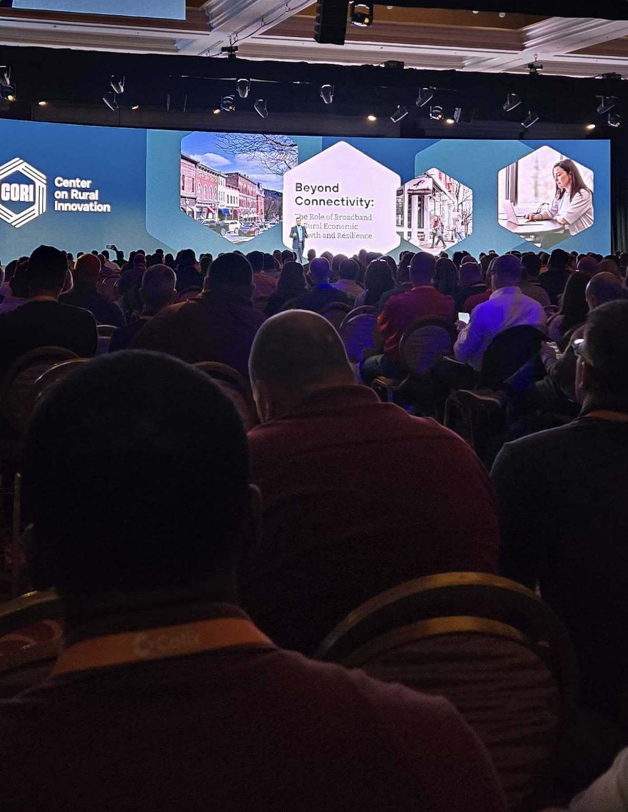

library(cori.data.fcc)
dir <- "data_swamp/nbm/"
get_nbm_release()
nbm_data <- get_nbm_available()
system(sprintf("mkdir -p %s", dir))
dl_nbm(
path_to_dl = "data_swamp/nbm",
release_date = "June 30, 2023",
data_type = "Fixed Broadband",
data_category = "Nationwide",
)
# part to check if dl was successful
num_files <- get_nbm_available() |>
dplyr::filter(release == "June 30, 2023" &
data_type == "Fixed Broadband" &
data_category == "Nationwide") |>
nrow()
files_dl <- length(list.files(dir,
pattern = "*.zip"))
identical(num_files, files_dl)
# TRUE[TITLE TBD]
cori.data.fcc:: an example of data as code
Olivier Leroy
Center On Rural Innovation
2024-10-20
Overview
- Introduction
- Research using the latest broadband service data
- Challenges to using the latest broadband service data
i.e., More data more problems - Our broadband data package:
cori.data.fcc
i.e., How we accelerate innovation by making this complex,
ever-changing broadband data more accessible and usable for research
üëã Hi, I‚Äôm Olivier, a Senior Data Engineer at CORI
Working with source data—often referred to as “big”, “messy”, “unstructured” data—is a growing challenge

Source: Harvard Business Review
- Socials: LinkedIn | Mastodon | Personal Website
CORI’s Mission
What Broadband means to Rural America
- We believe that small towns are home to big ideas — and combining new models of economic development with strategic investments in new infrastructure can empower rural communities across the U.S. to participate in and benefit from the nation’s growing tech economy.
Broadband knowledge is an important part of our work
- Broadband data is used extensively in our work to provide critical support to secure funding, develop infrastructure, and implement the programs needed to unlock the potential of rural America.
Out of necessity we had to become experts in broadband data
Our broadband apps in the wild
Our broadband research: from ideation to report
Broadband research derived from CORI data work
Beyond connectivity: The role of broadband in rural economic growth and resilience
Weinstein, A., Erouart, M., & Dewbury, A. (2024) Beyond Connectivity: The role of broadband in rural economic growth and resilience. Center on Rural Innovation. https://ruralinnovation.us/resources/reports/report-the-role-of-broadband-in-rural-economic-growth-and-resilience/The Fibre Broadband Housing Premium Across Three US States
Whitacre, B. (2024). The fibre broadband housing premium across three US States. Regional Studies, Regional Science, 11(1), 38–62. https://doi.org/10.1080/21681376.2024.2305951

New findings from Broadband Research
“Broadband access is increasingly recognized as essential infrastructure in today’s economy, with the ability to connect residents and businesses to economic opportunities nationwide”
- Rural counties with high broadband utilization experience:
- Significantly higher business growth rates
- Increased self-employment growth rates
- Higher per-capita income growth rates
- Stronger GDP growth rates
Weinstein, A., Erouart, M., & Dewbury, A. (2024)
Broadband research is evolving
… and so is the data!
as data experts: solve data on behalf of the researchers
| Form 477 | National Broadband Map | |
|---|---|---|
| US Census Boundaries | 2010 | 2020 |
| Granularity | Census blocks | Locations |
| Timeframe | 2014-2021 | 2022 - Ongoing |
| Releases | twice a year | twice a year[^version] |
| Records | 416,447,807 | 3,488,191,994 |
| Size | 400MB/year | 22GB/year |
Big messy data
Recquire domain knowledge
Evolving data landscape
How you would use the FCC’s data/platform…
- üîÅ Repeat for every State (56)
- üîÅ Repeat for every version (??)
- üî¥ Error prone (500 hundred clicks)
As a broadband researcher,
I wish I didn’t have to manually download FCC data
I wish I could share my analysis (and code) with colleagues
I wish I could easily perform quality checks on the raw FCC data
… I wish I had more time to do the interesting research and analysis
üí° Light from posit::conf, Slack is buzzing!
Workshop on DuckDB (Parquet / Arrow / OLAP)
Warning
Contains real slack messages with typos!


cori.data.fcc
… data packaged as code
- Address Data Challenges
- Data is packaged as code to simplify data access, reduce errors, and promote collaboration.
- Low-level data transformations are codified: easy for others to reproduce.
- Accelerate Innovation
- Broadband data is packaged so that researchers can focus on analysis and insights, not data wrangling.
- Unlock Deeper Insights Faster
cori.data.fccprovides fast access to granular details, essential for understanding broadband challenges across multiple geographic scales.
… how it works
Added DuckDB
Created quality checks to reduce errors
Complexity is handled in our upstream process and abstracted so that users can focus on what brings value!
How to use the package > Choose your own adventure!
Broadband data at the census block (or tract, county, etc.) level is perfect for my research:
Download the transformed data for NBM from CORI (ISP / County)I need to inspect the source (raw) data:
Download raw data files directly from the FCCI need source data but working with hundreds of CSV is not for me:
Download raw data as tables from CORI (NBM / Form 477)The guides linked above can help you with each step!
Examples use cases
Broadband service in the Northeast Kingdom
library(cori.data.fcc); library(dplyr); library(sf); library(tigris)
library(ggplot2); library(cori.charts); library(basemapR)
cori.charts::load_fonts()
caledonia_co_nbm <- cori.data.fcc::get_nbm_bl(geoid_co = "50005")
essex_co_nbm <- cori.data.fcc::get_nbm_bl(geoid_co = "50009")
orleans_co_nbm <- cori.data.fcc::get_nbm_bl(geoid_co = "50019")
nek_nbm <- dplyr::bind_rows(caledonia_co_nbm, essex_co_nbm, orleans_co_nbm)
# tigris to get places and block
vt_blocks <- tigris::blocks("VT", progress_bar = FALSE)
vt_places <- tigris::places(state = "VT", progress_bar = FALSE)
# wrangling
nek_bb_blocks <- inner_join(
vt_blocks,
nek_nbm,
by = c("GEOID20" = "geoid_bl")
) |>
mutate(
pct_100_20 = cnt_100_20 / cnt_total_locations,
pct_fiber = cnt_fiber_locations / cnt_total_locations
)
# Get major NEK Place centroids for map labeling
vt_places_centroids <- vt_places[lengths(sf::st_intersects(vt_places, nek_bb_blocks)) > 0, ] |>
st_centroid()
# Map
bbox <- sf::st_bbox(nek_bb_blocks) |>
cori.charts::fit_bbox_to_aspect_ratio(target_aspect_ratio = 2)
fig <- ggplot(data = nek_bb_blocks) +
base_map(
bbox,
increase_zoom = 3,
basemap = 'voyager'
) +
geom_sf(aes(fill = pct_100_20), color = "dimgray", linewidth = 0.1, alpha = 0.9) +
scale_fill_cori(
discrete = FALSE,
palette = "ctg2pu",
labels = scales::label_percent(),
reverse = T
) +
geom_sf_label(data = vt_places_centroids, aes(label = NAME), size = 2, color = "black", family = "Lato", fontface = "bold") +
coord_sf(
expand = TRUE,
xlim = c(bbox['xmin'], bbox['xmax']),
ylim = c(bbox['ymin'], bbox['ymax'])
) +
theme_cori_map() +
theme(
legend.key.width = unit(50, "pt")
) +
labs(
title = "Broadband service in the Northeast Kingdom",
subtitle = "Percent of locations with access to 100/20 Mbps service by census block",
caption = "Data source: 2023 FCC National Broadband Map\nMap source: © OpenStreetMap contributors © CARTO",
x = NULL,
y = NULL
)
Better services closer to “main street” (and worst farther…)
3 lines of codes to get the data
Use census blocks: easy match with other data sources (ACS, BEA, etc ..)
Northeast Kingdom: only 11.5% of locations have fiber
fig <- ggplot(data = nek_bb_blocks) +
base_map(
bbox,
increase_zoom = 3,
basemap = 'voyager'
) +
geom_sf(aes(fill = pct_fiber), color = "dimgray", linewidth = 0.1, alpha = 0.6) +
scale_fill_cori(
discrete = FALSE,
palette = "ctg2pu",
labels = scales::label_percent(),
reverse = T
) +
geom_sf_label(data = vt_places_centroids, aes(label = NAME), size = 2, color = "black", family = "Lato", fontface = "bold") +
coord_sf(
expand = TRUE,
xlim = c(bbox['xmin'], bbox['xmax']),
ylim = c(bbox['ymin'], bbox['ymax'])
) +
theme_cori_map() +
theme(
legend.key.width = unit(50, "pt"),
) +
labs(
title = "Fiber access in the Northeast Kingdom",
subtitle = "Percent of locations with access to fiber by census block",
caption = "Data source: 2023 FCC National Broadband Map\nMap source: © OpenStreetMap contributors © CARTO",
x = NULL,
y = NULL
)
Only 11.5% of locations have fiber access in the Northeast Kingdom
6/25 ISP are providing Fiber
Leading ISP here is small ISP, non-profit: NEK broadband
What are each ISP competitors in Ohio?
library(tigris);library(cori.data.fcc);library(igraph);library(dplyr)
library(crosstalk);library(DT);library(threejs)
oh <- tigris::counties(state = "39") # tigris is a great example of data as code
talk_to_me <- function(x) {
message(sprintf("Love Ohio: %s", x))
cori.data.fcc::get_nbm_bl(x)
}
oh_nbm <- lapply(oh$GEOID, talk_to_me) |> dplyr::bind_rows()
oh2_nbm <- oh_nbm[!is.na(oh_nbm$combo_frn), ]
od_me <- function(x) {
temp <- oh2_nbm[x, "array_frn"][[1]]
geoid_bl <- oh2_nbm[x, "geoid_bl"]
if (length(temp) == 1L)
{
return(data.frame(V1 = temp, V2 = NA, geoid_bl = geoid_bl))
}
bob <- as.data.frame(t(combn(temp, 2)))
bob$geoid_bl <- geoid_bl
return(bob)
}
od <- lapply(1:nrow(oh2_nbm), od_me) |> dplyr::bind_rows()
od <- od[!is.na(od$V2),]
bob <- rbind(data.frame(frn = od$V1, geoid_bl = od$geoid_bl),
data.frame(frn = od$V2, geoid_bl = od$geoid_bl))
cnt_bl <- summarise(bob, cnt_bl = n_distinct(geoid_bl), cnt_rel = n(), .by = frn)
od <- od[!is.na(od$V2),]
od$combo <- paste(od$V1, od$V2, sep = " - ")
od$count <- 1
rel <- od |> dplyr::summarize(n = sum(count), .by = combo)
give_me_from <- function(x) unlist(strsplit(x, " - "))[1]
give_me_to <- function(x) unlist(strsplit(x, " - "))[2]
rel$from <- sapply(rel$combo , give_me_from)
rel$to <- sapply(rel$combo, give_me_to)
fcc_slim <- cori.data.fcc::fcc_provider[, c("frn", "provider_name")]
frn <- data.frame( frn = unique(c(rel$from, rel$to)))
frn <- merge(frn, fcc_slim, by.x = "frn", by.y = "frn")
frn <- merge(frn, cnt_bl, by.x = "frn", by.y = "frn")
oh_graph <- graph_from_data_frame(rel[,c("from", "to")], directed = FALSE, vertices = frn)
oh_graph <- graph_from_data_frame(rel[,c("from", "to")], directed = FALSE, vertices = frn)
draw_me_a_graph <- function(x, ...) {
threejs::graphjs(x,
vertex.label = V(x)$provider_name,
vertex.color = rep(2, vcount(x)),
vertex.size = .1,
edge.color = "grey",
edge.width = 3, ...)
}
g <- draw_me_a_graph(oh_graph, brush=TRUE)
points3d(g, vertices(g), color="black", pch=V(oh_graph)$provider_name, size=1.5)
1321 ISP operating in Ohio
Providers competiting in all Ohio are at the core
Providers with few competitors are at the edges
cori.data.fccsupport spatial and graph data
How to get the package
The source code is hosted on GitHub (Version control)
You need the R package {remotes}.
üöß Check the version you have and see what new versions are available üöß
Summary: Data is only useful if you can effectively use it.
Data packages are abstracting the pain
Data packages can give more power (especialy )!
In emerging field: Easier to capitalize/build on it
We need those extra “team members”
Slides are online:
Built with R and cori.data.fcc
Created by Quarto (format: revealjs)
Hosted and deployed on GitHub
https://ruralinnovation.github.io/prez_auber_2024/

Contacts
Website: https://ruralinnovation.us
Thank you!